文字
背景
行間


カテゴリ:今日の出来事
令和2年初登校
今日令和2年1月7日（火）は生徒にとって年明け初めての登校となりました。今年に入って穏やかな日が続いています。1月から3月は受験や大切な行事が続くのでこれらに関係した日が同様に穏やかな日になってくれることを祈ります。さて、昨年、約半年間ほどかけて行われた本館の外壁工事も無事終了し本館の外観がとてもきれいになりました。（写真）工事期間中は台風などの多くの自然災害が発生するなか無事に工事を終えていただき感謝いたします。お陰様で、今年は年始めからきれいな校舎で、校舎を囲んでいた工事用の足場も無くなったので、生徒や教職員の校舎間での移動時の動線もいつも通りに戻った環境で授業が開始できて本当にありがたいです。あらためまして、すべての関係者の皆様に感謝申し上げます。

 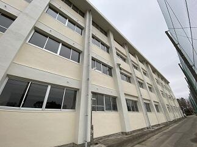
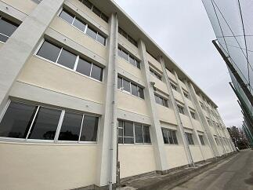
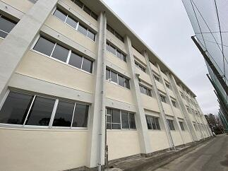 第4回考査が始まりました。
今日（12月3日）から４日間の日程で第４回の定期考査が始まりました。昨日は12月としては記録的な大雨で一時的に10月25日の豪雨を思い出しましたが、今日はとても穏やかな天候となって良かったです。皆で気をつけて風邪やインフルエンザなどに罹らぬように手洗いの励行やマスクの着用で予防していきましょう。また、インフルエンザの予防接種は接種後２週間で効力を発揮しはじめ５か月間有効とのことです。（ちなみに私は既に接種済みなので年度末までは大丈夫かな）皆で健康に気をつけていきましょう。
 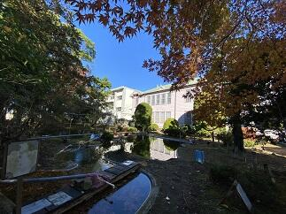
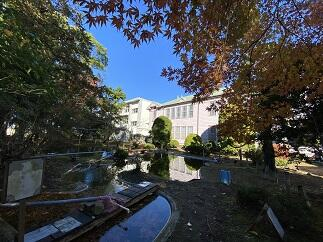
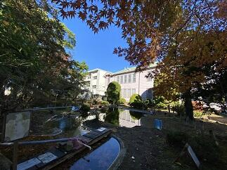 記念館一般公開日に思う
今日（11月23日）は、13:00から16:00の間、時間限定で記念館を一般公開する日です。天候は雨ですが、これはこれで雨に淡く光る紅葉にも格別の趣を感じられるのではないでしょうか。
今も現役で活躍する記念館。ここに一歩足を踏み入れると、創立以来多くの有為な人材を世に送り続けてきた伝統校の学びの場としての凜とした空気を感じられることでしょう。と同時にここで脈々と育まれてきた温かさと何ともいえぬ懐かしさを感じることができるでしょう。そんな記念館だからこそ、伝統が形になって時代を超えて愛し続けられているのだと思います。
 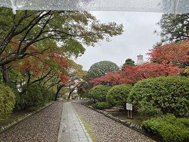
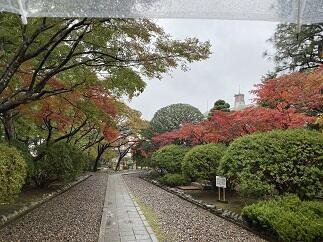
 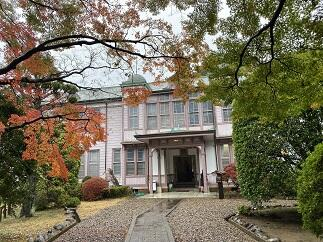
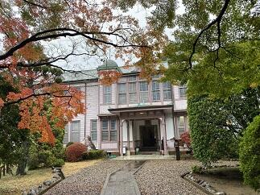


今も現役で活躍する記念館。ここに一歩足を踏み入れると、創立以来多くの有為な人材を世に送り続けてきた伝統校の学びの場としての凜とした空気を感じられることでしょう。と同時にここで脈々と育まれてきた温かさと何ともいえぬ懐かしさを感じることができるでしょう。そんな記念館だからこそ、伝統が形になって時代を超えて愛し続けられているのだと思います。
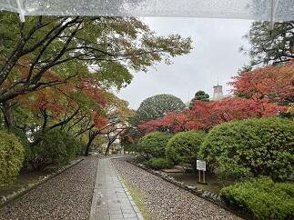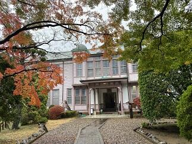
多くの方々の御来場を頂きありがとうございます。
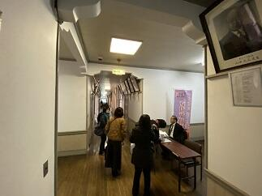

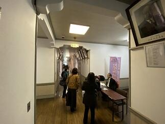
朝霧の風景
今日10月2日（水）の朝は霧が深く、視界が50ｍ位でした。天気予報では日中は気温が30℃に達するということで昨日に引き続き10月としては異例の真夏日の暑さが続きそうです。そんななか、弓道部が、匝瑳高校での練習に向けて元気にバスで出発しました。頑張ってください。

 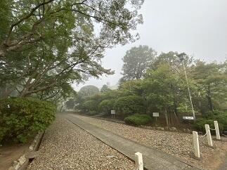
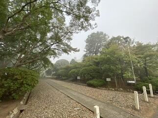
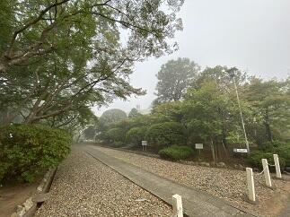 早朝の風景

 今日9月10日は、朝の段階では、一部電車に運休や遅延が発生していて停電も復旧していない地区では信号が消えているところがたくさんあります。通勤通学の方は決して無理をしないようにお願いします。台風15号の爪痕が残る学校でも少しづつ復旧作業を行っているところです。そんななか、いつものように早朝から剣道部の皆さんが落葉や枝を掃除してくれていました。本当にいつもありがとう。感謝、感謝です。
今日9月10日は、朝の段階では、一部電車に運休や遅延が発生していて停電も復旧していない地区では信号が消えているところがたくさんあります。通勤通学の方は決して無理をしないようにお願いします。台風15号の爪痕が残る学校でも少しづつ復旧作業を行っているところです。そんななか、いつものように早朝から剣道部の皆さんが落葉や枝を掃除してくれていました。本当にいつもありがとう。感謝、感謝です。 平成最後の入学式
本日平成31年4月9日（火）は平成最後の入学式でした。前日とは打って変わって穏やかな春の日となり、桜もその花で入学を祝ってくれているようでした。おかげ様で、入学式として最高の日になりました。入学式では、内山賢一PTA会長、本校同窓会である鹿山会の粟生雄四郎会長をはじめとするご来賓の方々や多くの保護者が見守るなか普通科280名、理数科40名の合計320名の入学を許可し、無事に新入生として迎えることができました。この場を借りて新入生の母校の中学校の先生方をはじめ多くの関係者の皆様へご報告するとともに感謝申し上げます。引き続き佐倉高校でしっかりと新入生の夢を育みその実現に向けて支援してまいりますので、皆様におかれましても今後ともご支援ご協力をお願い申し上げます。
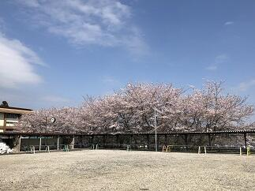 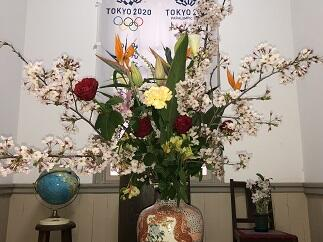
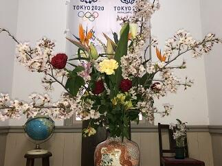

 本校では、式典に際しても多くの生徒さんの協力で運営がされています。新入生の入退場に際しては吹奏楽部が、校歌の披露を音楽部が演奏し、そして式場や校内のお花を華道部が生けてくださいました。本当にありがとうございました。（写真上段右、下段は華道部の作品）
本校では、式典に際しても多くの生徒さんの協力で運営がされています。新入生の入退場に際しては吹奏楽部が、校歌の披露を音楽部が演奏し、そして式場や校内のお花を華道部が生けてくださいました。本当にありがとうございました。（写真上段右、下段は華道部の作品）
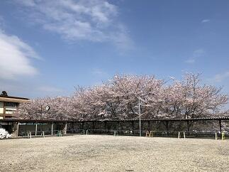
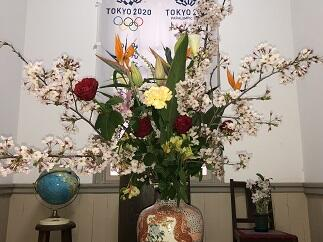本校では、式典に際しても多くの生徒さんの協力で運営がされています。新入生の入退場に際しては吹奏楽部が、校歌の披露を音楽部が演奏し、そして式場や校内のお花を華道部が生けてくださいました。本当にありがとうございました。（写真上段右、下段は華道部の作品） 平成最後の始業式
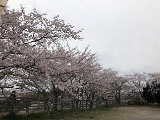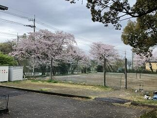 平成31年4月8日（月）は、平成最後となる着任式・始業式が行われました。朝は、雨模様でしたが、昼間は新2，3年生がクラス写真を撮れるほど、天気が一時的に回復しました。桜も明日の入学式に備えてその花を残してくれているようです。ただし、午後に入って徐々に天候が悪化し、夕刻には、春雷を伴った激しい雨が降りました。明日はすっきりと晴れてほしいものです。
平成31年4月8日（月）は、平成最後となる着任式・始業式が行われました。朝は、雨模様でしたが、昼間は新2，3年生がクラス写真を撮れるほど、天気が一時的に回復しました。桜も明日の入学式に備えてその花を残してくれているようです。ただし、午後に入って徐々に天候が悪化し、夕刻には、春雷を伴った激しい雨が降りました。明日はすっきりと晴れてほしいものです。
平成31年4月8日（月）は、平成最後となる着任式・始業式が行われました。朝は、雨模様でしたが、昼間は新2，3年生がクラス写真を撮れるほど、天気が一時的に回復しました。桜も明日の入学式に備えてその花を残してくれているようです。ただし、午後に入って徐々に天候が悪化し、夕刻には、春雷を伴った激しい雨が降りました。明日はすっきりと晴れてほしいものです。 今年度末離退任される方々への感謝を込めて
本日は、本校を今年度離退任される先生方、事務職員の方々にとって、本校とのお別れの日となりました。退職される教職員の皆様へは辞令を交付させていただきました。その後、離退任される皆さんを教職員や生徒で正門までお見送りしました。その間、吹奏楽部の皆さんが校歌を演奏してくださって、送る側、送られる側双方にとって、とても心に残るものとなりました。離退任される教職員の皆様本当にありがとうございました。新天地でのご活躍とご健勝を祈念いたします。また、吹奏楽部の皆さんはじめ、参加してくださった皆様に感謝いたします。ありがとうございました。なお、正式な離退任式は4月12日（金）に行われます。 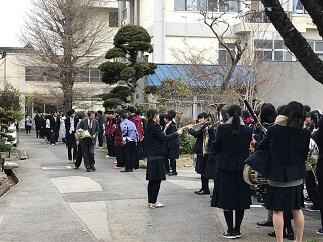
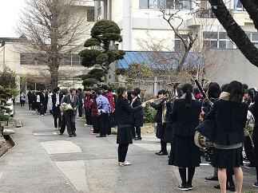


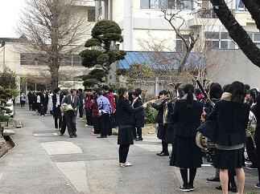 受検生の皆さんお疲れさまでした。
受検生の皆さん検査お疲れ様でした。入学許可候補者の発表は3月6日（水）の午前9時からとなります。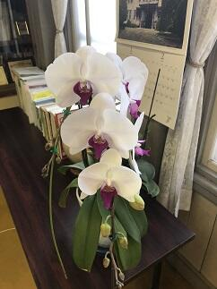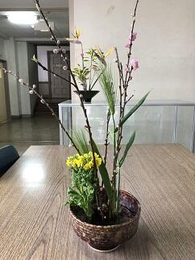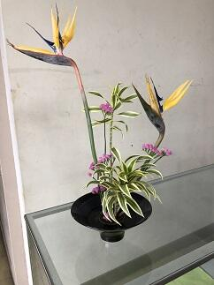
千葉県公立高等学校後期入学者選抜受検生の皆さんへ
本日2月28日（木）は千葉県公立高等学校後期入学者選抜検査が行われます。佐倉高校付近では、7:00時点で天候は小雨、電車は平常運転を行っています。受検生の皆さんは気を付けてお越しください。


佐倉高校志願者の皆さんへ（2月4日）


 今日は、千葉県公立高等学校前期入学者選抜の志願受付の第2日です。本日の受付時間は午後4時までとなっています。受付場所は、記念館（写真右）となっています。正門（写真中央）を入ってまっすぐ進むと記念館の屋根が左手上方に見えます（写真右）。気を付けてお越しください。
今日は、千葉県公立高等学校前期入学者選抜の志願受付の第2日です。本日の受付時間は午後4時までとなっています。受付場所は、記念館（写真右）となっています。正門（写真中央）を入ってまっすぐ進むと記念館の屋根が左手上方に見えます（写真右）。気を付けてお越しください。 如月朔日朝一でうれしかったこと。

 感覚としてちょっと前に年が明けたと思っていたらもう2月です。昨夜からは今年はじめての雪が降り積雪となりました。今日は千葉県公立高等学校前期入学者選抜の志願者受付の日です。地域交流施設で受付をおこないますが、志願者のために教職員・生徒が朝早くから雪かきをしてくれました。今日は朝からとっても嬉しく本校に来てよかったと思うと同時に、本校の教職員・生徒さんたちを誇りに思いました。
感覚としてちょっと前に年が明けたと思っていたらもう2月です。昨夜からは今年はじめての雪が降り積雪となりました。今日は千葉県公立高等学校前期入学者選抜の志願者受付の日です。地域交流施設で受付をおこないますが、志願者のために教職員・生徒が朝早くから雪かきをしてくれました。今日は朝からとっても嬉しく本校に来てよかったと思うと同時に、本校の教職員・生徒さんたちを誇りに思いました。 雪景色20190201


 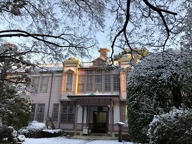
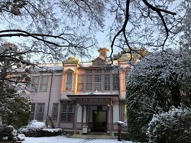 今年初めての雪景色をご堪能ください。写真１段目は正門付近から、2段目は東郷池、3段目は記念館の様子です。
今年初めての雪景色をご堪能ください。写真１段目は正門付近から、2段目は東郷池、3段目は記念館の様子です。 憩いのお菓子
 ２EFGの家庭基礎研究を受講している生徒さんたちが、今日はお饅頭を作って来てくれました。いつもありがとうございます。きめ細かくしっとりした餡と皮のほんのりした甘さとのバランスが絶妙で出来栄えは、すばらしいものでした。よく見るとおまんじゅうはそのフォルムがシンプルでかわいらしいですね。生徒さんの作品のすばらしさが伝わる表現と写真が撮れているか心配ですが感謝を込めて今回も載せさていただきました。
２EFGの家庭基礎研究を受講している生徒さんたちが、今日はお饅頭を作って来てくれました。いつもありがとうございます。きめ細かくしっとりした餡と皮のほんのりした甘さとのバランスが絶妙で出来栄えは、すばらしいものでした。よく見るとおまんじゅうはそのフォルムがシンプルでかわいらしいですね。生徒さんの作品のすばらしさが伝わる表現と写真が撮れているか心配ですが感謝を込めて今回も載せさていただきました。 初氷
今日は、また一段と寒さが厳しくなりました。(早朝の気温は１℃でした。)天気予報では午後から、冬将軍の影響で北関東から東京にかけて雪やみぞれが予想されています。
この季節は空気の乾燥や、急激な温度変化（暖かい室内から寒い室外への移動時など）への対策をして、風邪・インフルエンザなどにかからないように健康管理に注意していきましょう。
 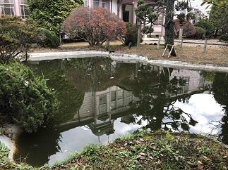
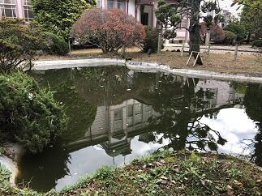
本校では、外の水たまりに今年初めて氷が張りました。（写真左は紅葉を取り込んだ初氷）庭の景色は、あんなに美しかった紅葉も一部を除いて冬枯れの佇まいとなり（写真中央）、東郷池（写真右は校舎が映る東郷池）の鯉たちは、最近はすっかり活動が鈍くなり水面近くに姿を見せなくなりました。自然は私たちに秋を惜しみつつも確実に冬の装いを見せ始めています。
この季節は空気の乾燥や、急激な温度変化（暖かい室内から寒い室外への移動時など）への対策をして、風邪・インフルエンザなどにかからないように健康管理に注意していきましょう。
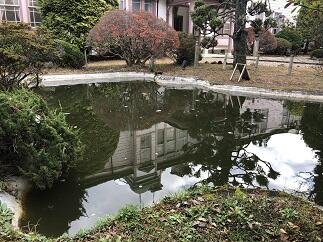本校では、外の水たまりに今年初めて氷が張りました。（写真左は紅葉を取り込んだ初氷）庭の景色は、あんなに美しかった紅葉も一部を除いて冬枯れの佇まいとなり（写真中央）、東郷池（写真右は校舎が映る東郷池）の鯉たちは、最近はすっかり活動が鈍くなり水面近くに姿を見せなくなりました。自然は私たちに秋を惜しみつつも確実に冬の装いを見せ始めています。
第４回定期考査


 本日12月４日から７日までの４日間で第４回の定期考査が行われます。気温の変化や天候不順により体調を崩しやすい時期です。まずは、健康管理をしっかりして普段の実力を発揮できるようにしましょう。頑張ってください。(写真は晩秋の木々)
本日12月４日から７日までの４日間で第４回の定期考査が行われます。気温の変化や天候不順により体調を崩しやすい時期です。まずは、健康管理をしっかりして普段の実力を発揮できるようにしましょう。頑張ってください。(写真は晩秋の木々)卒業演奏会

 本日、昼休みの時間を利用して３年生の音楽Ⅲ受講者４名による演奏会が音楽室で行われました。その素晴らしい演奏に心洗われ癒されました。この授業を受講していないと聞くことができない演奏を、こうして多くの先生方、生徒たちに聞く機会を作っていただいたことに感謝いたします。ありがとうございました。
本日、昼休みの時間を利用して３年生の音楽Ⅲ受講者４名による演奏会が音楽室で行われました。その素晴らしい演奏に心洗われ癒されました。この授業を受講していないと聞くことができない演奏を、こうして多くの先生方、生徒たちに聞く機会を作っていただいたことに感謝いたします。ありがとうございました。 霜月から師走へ


 霜月から師走へ、今年度も残り４カ月となりました。この８カ月を皆さんはどの様に振り返りますか。皆さんが今まで大切に育んできたものに、そろそろ花を咲かせ実を結ばせる大切な時期になって来ました。まずは、必ず来る好機をいつでも活用できるよう、これまで以上に、健康に気を付けるとともに、日ごろの力を十二分に発揮する準備をしておきましょう。
霜月から師走へ、今年度も残り４カ月となりました。この８カ月を皆さんはどの様に振り返りますか。皆さんが今まで大切に育んできたものに、そろそろ花を咲かせ実を結ばせる大切な時期になって来ました。まずは、必ず来る好機をいつでも活用できるよう、これまで以上に、健康に気を付けるとともに、日ごろの力を十二分に発揮する準備をしておきましょう。 季節を感じるもの
気象庁によると、今年は暖冬だそうで、関東では木枯らし1号が吹かない年となりそうです。（10月半ばの晩秋（ばんしゅう）から11月末の初冬（しょとう）の間に、初めて吹く毎秒8メートル以上の北よりの風のことです。 気象庁では、東京地方と近畿地方でこのような冬になったことを感じさせるような風が吹いたとき、「木枯らし１号」のお知らせを発表しているようです。）


昨日も、思いのほか暖かくなりました。
体育の授業では持久走が始まりました。
昨日も、思いのほか暖かくなりました。
体育の授業では持久走が始まりました。
ダンス同好会（クリスマス公演）
ダンス同好会が、本日昼休み、中庭で、クリスマス公演を行いました。ダンス同好会は季節の折々に公演をしてくれて、多くの生徒達が楽しみにしています。


 オーディエンスと一体になったパフォーマンスは、いつ見てもすばらしいです。日頃の練習の成果が十分に発揮されていました。
オーディエンスと一体になったパフォーマンスは、いつ見てもすばらしいです。日頃の練習の成果が十分に発揮されていました。
オーディエンスと一体になったパフォーマンスは、いつ見てもすばらしいです。日頃の練習の成果が十分に発揮されていました。